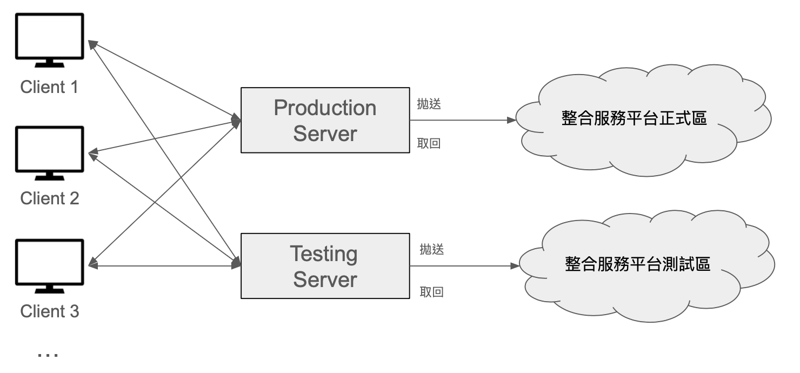
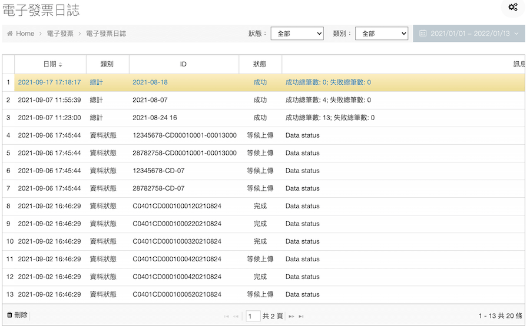
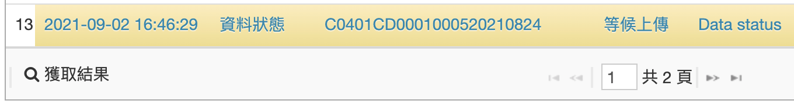
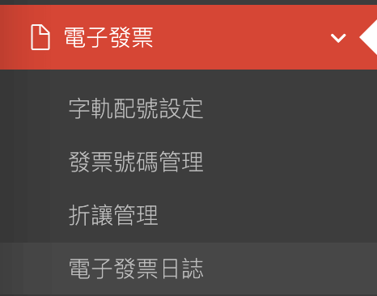

機緣
入職第一個接觸的客戶就有此一需求，電子發票在台灣已是常見的系統功能之一。其實更快的方式是導入加值中心的API。但我們想自己來，功能由此而生。中間曾搞錯文件而往錯誤的方向開發，直到交付結束客戶一通電話打來一與驚醒夢中人。跟上司交代方向錯誤後，押時間趕工，最後幸運在驗收前封關大吉。
介紹
此系統是本人獨立開發。所以熟悉與財政部整合服務平台對接的一些細節。其中因為客戶系統可能位於不同的AWS Region，所以做集中式的管理。

每一個客戶都有模擬環境(Development)與正式環境(Production)，分別對應到整合服務平台的測試區與正式區。為了開發上的便利，CI/CD是不可少的層面，讓工程師們能專心消化專案。
關於傳輸後的結果，在每一個客戶端都能透過Browser查看每一張發票資訊是否已經順利上傳。如果有任何狀況，系統也會在發生錯誤的當下寄送Mail到指定的信箱。

如果想知道目前處理的狀態，也可按下「獲取結果」來拉取目前的狀態。

還有其他功能，其實電子發票會擺在第一個，是因為有滿多的Know how在裡面的。總共歷經三次的改版。現在功能非常完善，新客戶除了遞交必要文件之外，幾乎不用什麼額外的設定就可直接使用。當然我們也有申請會員載具，對於我們的客戶，只要一點點的成本，就能擁有無紙化帶來的環保與便利。
